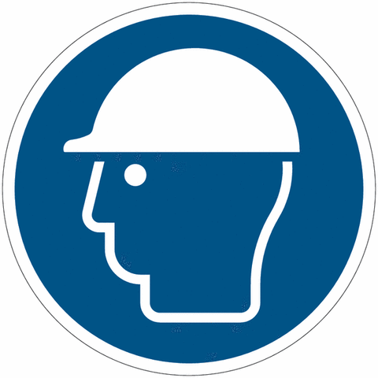

Práctica 3 · Evaluación formativa
Prevención de riesgos en el trabajo
El cuestionario de Socrative recorre lo básico de la prevención: qué es un riesgo y un factor de riesgo, los equipos de protección, la señalización y cómo actuar ante una herida o un incendio. Tiene ocho preguntas de opción múltiple, una de verdadero o falso y una de respuesta abierta.
Al responderlo, cada alumno comprueba qué ha entendido y qué le conviene repasar, sin la presión de un examen. Los informes de clase e individual muestran después dónde se concentran los errores, así que el docente sabe qué contenidos reforzar.
Selecciona tus respuestas y utiliza los controles de cada pregunta para revisarlas.
Los materiales, en un mismo muro
Código del cuestionario: SOC-UBKYBYJR. En el Padlet están el test, el informe de clase y el informe individual aportados para esta práctica.
Abrir el Padlet en una pestaña nueva ↗
El muro y sus documentos se abren en una pestaña nueva. Puedes volver aquí para continuar el cuestionario.
1. En el lugar de trabajo, una máquina produce ruido intenso durante toda la jornada. ¿Qué elemento del caso es el factor de riesgo?
Consultar la respuesta
Respuesta: A. La exposición al ruido de la máquina.
2. ¿Qué es un riesgo laboral?
Consultar la respuesta
Respuesta: C. La posibilidad de sufrir un daño en el trabajo.
3. ¿Qué significa EPI?
Consultar la respuesta
Respuesta: B. Equipo de protección individual.
4. En el trabajo tienes que llevar gafas como medida de protección, ¿Qué tipo de protección son?
Consultar la respuesta
Respuesta: D. Individual.
5. En una oficina se trabaja varias horas con el ordenador y el cuello girado porque la pantalla está a un lado. ¿Qué medida de protección se deberian utilizar?
Consultar la respuesta
Respuesta: A. Colocar la pantalla de frente a la altura de los ojos.
6. Una señal azul redonda con un casco dibujado indica

Consultar la respuesta
Respuesta: C. Obligación de llevar casco.
7. Si te haces una herida en el trabajo, ¿Qué debes hacer primero?
Consultar la respuesta
Respuesta: B. Avisar y pedir ayuda.
8. Si estuvieses presenciando un incendio en el lugar de trabajo ¿Qué harías?
Consultar la respuesta
Opción orientativa: D. Seguir el protocolo de emergencia PAS.
La clave configurada en Socrative no se ha podido confirmar en los informes.
9. Colocar un cartel junto a un cable que se encuentra en el suelo y entorpece el paso ¿elimina el riesgo de tropiezo?
Consultar la respuesta
Respuesta: False.
10. Escribe un equipo de protección y di para que sirve
Consultar cómo revisar la respuesta
Revisa con tu docente si has identificado un equipo de protección y explicado para qué sirve.